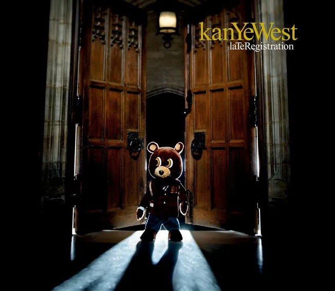
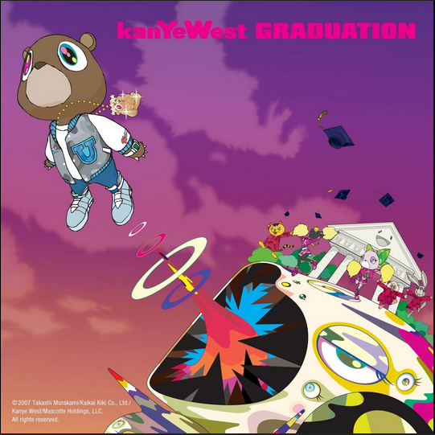

College Dropout
Sortie en 2004. Son premier album, celui avec quoi tout a commencer, Kanye dénonce et aborde des thèmes telle que l'éducation, la foi. Album révolutionnaire car c'est le premier album qui mélange rap, soul et gospel, L'album remporte 9 nomination aux grammy's Award
Late Registration

Sortie en 2005. Le 2ème album celui de la confirmation. Il y avait beaucoup de pression pour savoir si kanye west n'était pas qu'un artiste éphémère et Late Registration aller definir son futur. Pour beaucoup de fans l'album est considéré comme le meilleur avec pleins de classiques comme roses, Hey mama, Gold Digger.
Graduation
Sortie en 2007. Graduation est le plus connu avec un hit planétaire "stronger" feat: Daft Punk. Cet album écrase tout sur son passage et place l'artiste en tant qu'icone de la musique.
808's and Heartbreak

Sortie en 2008. Cet album a était beaucoup critiqué a sa sorti car il y a eu une utilisation de l'autotune omniprésentes dans cet album mais il sera acclamée par la critique plus tard, cet album a une ambiance plus morose car kanye west avait perdu sa mère récemment.
My Beautiful Darked Twisted Fantasy

My Beautiful Dark Twisted Fantasy, sorti en 2010, est l'album magistral de Kanye West, mêlant rap, rock, soul et orchestrations grandioses. Il explore les thèmes de la célébrité, de l'excès et de la rédemption à travers des morceaux emblématiques comme Power, Runaway et All of the Lights. Acclamé comme un chef-d'œuvre, il redéfinit les limites de la créativité musicale dans le hip-hop.
Watch The Throne

Watch the Throne, sorti en 2011, est l’album collaboratif de Kanye West et Jay-Z, célébrant le luxe, le pouvoir et l’héritage afro-américain. Avec des titres comme Otis, Niggas in Paris et No Church in the Wild, il mélange rap, soul et électronique sur des productions ambitieuses. L'album est acclamé pour son audace artistique et son exploration des thèmes de réussite et d'identité.
Yeezus

Yeezus, sorti en 2013, est un album audacieux et minimaliste où Kanye West fusionne rap, punk, électronique et industriel. Avec des morceaux comme Black Skinhead et Bound 2, il explore des thèmes de race, de politique et de désir avec une brutalité sans filtre. Cet album révolutionnaire divise, mais consolide Kanye comme un innovateur radical.
The Life of Pablo

The Life of Pablo, sorti en 2016, est un album éclectique et introspectif où Kanye West mélange gospel, rap et électronique. Des morceaux comme Ultralight Beam et Famous explorent la foi, la célébrité et ses contradictions personnelles. Fluid et expérimental, cet album reflète une œuvre en constante évolution.
Ye

Ye, sorti en 2018, est un album court et introspectif où Kanye West aborde ses luttes mentales, ses relations et ses controverses publiques. Avec des morceaux comme Ghost Town et Yikes, il mélange vulnérabilité et audace musicale. Cet album intime révèle une facette brute et personnelle de l’artiste.
Jesus Is King

Jesus Is King, sorti en 2019, est un album gospel où Kanye West exprime sa foi chrétienne renouvelée. Avec des titres comme Follow God et Selah, il mélange rap, chœurs spirituels et production minimaliste. Cet album marque un tournant spirituel majeur dans sa carrière.